The Wrangler National Finals Rodeo is the season-ending championship event for the Professional Rodeo Cowboys Association and the Women’s Professional Rodeo Association and is widely acknowledged to be the world’s premier rodeo. Held every December since 1985 at the Thomas & Mack Center in Las Vegas, the Wrangler NFR is ProRodeo’s richest and most prestigious rodeo, and it showcases the very best cowboys, barrel racers and livestock in the world.
2019 WNFR Team Roping Headers Profiles
Riley Minor: Riley Minor – Ellensburg, Wash. ($97,649) 10-time WNFR qualifier
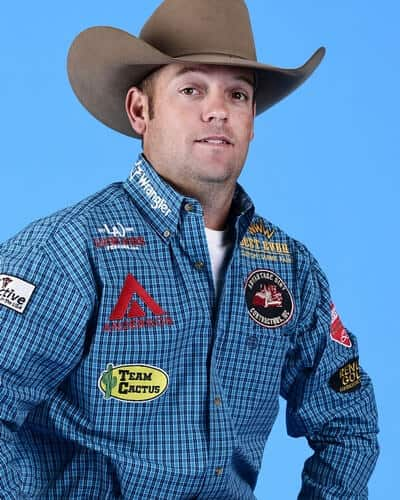
There have been a lot of consistency’s in Riley Minor’s life. And there have been things that he has been consistent at. One of those is team roping and that has him headed to his 10th Wrangler National Finals Rodeo roping with his older brother.
Every time that Riley has nodded his head to call for a steer in the Thomas and Mack Center, his older brother Brady has been to his right waiting to rope two legs. Riley has consistently roped horns and this year that has led to $97,649 in regular season earnings. He will start the NFR in sixth place. His four-legged partner has added to that consistency over the last several years.
Professional
2019 Highlights – partner Brady Minor
• Won the Sheridan WYO Rodeo
• Won the Dinosaur Roundup Rodeo (Vernal, Utah)
• Won the Chief Joseph (Ore.) Days
• Co-champion at the Helzapoppin (Buckeye, Ariz.)
• Co-champion at the Medicine Hat (Alberta) Stampede
Erich Rogers: Erich Rogers – Round Rock, Ariz. ($73,999) 9-time WNFR qualifier 2017 World Champion Header

Erich spent most of the 2019 season roping with the PRCA Heeling Rookie of the Year who finished the season in 17th place. Paden will be in Las Vegas to get his award. Erich finished the regular season with $73,999 in earnings and will start the NFR in 13th place.
He and Paden had a good Cowboy Christmas run winning the rodeo at St. Paul, Oregon and tying for first at what Erich considers his hometown rodeo in Window Rock, Arizona. The win was really special for Paden as it was the first buckle that he has won at a rodeo. Erich had won the rodeo in 2015 and even though he has a gold buckle, the one from St. Paul is what he sports most of the time. He told Paden it was his lucky buckle. Now thanks to Erich’s heading, Paden has one of his own and Erich has two lucky buckles.
Professional
2019 Highlights- Partner Payden Bray
• Won the St. Paul (Ore.) Rodeo
• Won the Ute Mountain Roundup Rodeo
• Won the Laramie (Wyo.) Jubilee Days
• Won the Horse Heaven/Kennewick (Wash.) Round-Up
• Co-champion at the Annual Fouth of July Celebration (Window Rock, Ariz.)
Clay Smith: Clay Smith – Broken Bow, Okla. ($150,512) 5-time WNFR qualifier
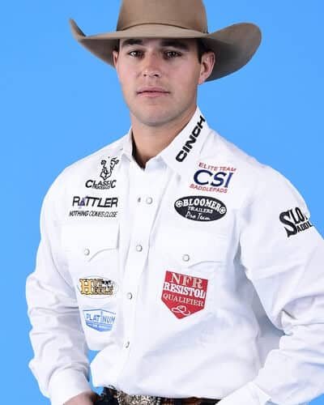
A year ago, Clay Smith missed his first steer at the Wrangler National Finals Rodeo. What could have dashed his hopes for a world title reminded him to treat the NFR like 10 separate rodeos.
He did just that, went on to place in seven of the rounds winning rounds two and five and leaving Las Vegas as the new world champion header. It was his fourth qualification for rodeo’s championships and each of those times had been with heeler Paul Eaves, who won the world in the heeling.
This year has been a year of transition for the man from Broken Bow, Oklahoma. He started roping with Jake Long. They won the National Western Stock Show Rodeo in Denver in January and the RAM National Circuit Finals in March.
Professional
2019 Highlights- Partner Jake Long
• Won the all-around at the Walla Walla (Wash.) Frontier Days
• Won the all-around at the 50th Annual Cowboy Capital Of The World PRCA Rodeo (Stephenville, Texas)
• Won the Ram National Circuit Finals Rodeo (Kissimmee, Fla.)
• Won the Texas (Waco) Circuit Finals Rodeo
• Won the National Western Stock Show and Rodeo (Denver, Colo.)
• Won the Ropin Dreams (Jourdanton, Texas)
• Won the team roping and co-champion in all-around at the Apache (Okla.) Stampede, with Jade Corkill
• Won the Greeley (Colo.) Stampede, with Jade Corkill
• Won the Eugene (Ore.) Pro Rodeo, with Jade Corkill
• Won the Rancho Mission Viejo Rodeo (San Juan Capistrano, Calif.), with Jade Corkill
• Co-champion at the Kansas (Phillipsburg) Biggest Rodeo, with Jade Corkill
• Won the San Angelo (Texas) Cinch Shoot-Out Rodeo, with Paul Eaves
Ty Blasingame: Ty Blasingame – Casper, Wyo. ($101,490) 2-time WNFR qualifier
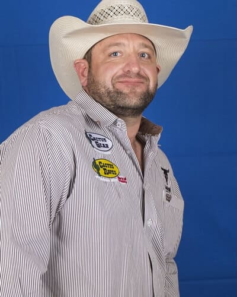
Sometimes the unexpected works out. It sure did for Ty Blasingame this year. Ty is headed back to the NFR after a nine-year absence.
He was there in 2010 with Cody Hintz finishing the season in 14th place. Finding head horses, getting married and having daughters all added challenges to Ty’s quest to get back to Vegas. He came close finishing in the top 25 three more years. Then to support his family he started driving truck. He bought more trucks and had others working for him, but the desire to get back to roping was growing. Ty had been living in Ramah, Colorado. After going through a divorce, he moved to Casper, Wyoming.
Professional
2019 Highlights
• Won RodeoHouston (Texas), with Kyle Lockett
• Won the Moses Lake (Wash.) Round-Up Rodeo, with Brandon Bates
Clay Tryan: Clay Tryan – Billings, Mont. ($103,165) 17-time WNFR qualifier 3-time World Champion
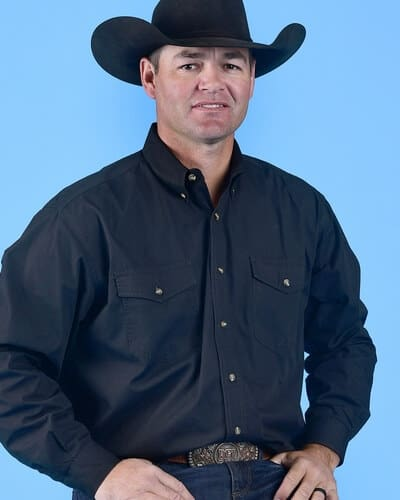
There’s very little in the world of team roping that Clay Tryan has yet to accomplish, yet he still finds the drive and passion to load up horses, get in a truck and drive to the next rodeo or jackpot.
He has been a member of the PRCA for 22 years and has won nearly every major rodeo on the circuit. The Reno (Nevada) Rodeo is still on his bucket list. When he nods his head to call for a steer at the first performance of this year’s Wrangler National Finals Rodeo, it will be the 151st time he has done that.
Professional
2019 Highlights- Partner Travis Graves
• Won the Waller County Fair & Rodeo (Hempstead, Texas)
• Won the Ogden (Utah) Pioneer Days
• Won the Daggott County Centennial Rodeo (Manila, Utah)
• Won the Evanston (Wyo.) Cowboy Days
• Co-champion at the Kansas (Phillipsburg) Biggest Rodeo
Brenten Hall: Brenten Hall – Jay, Okla. ($88,927) First-time WNFR qualifier
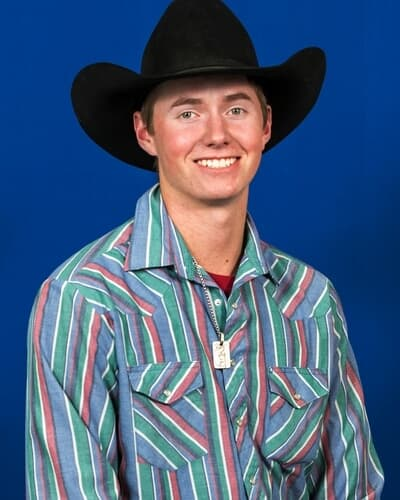
Brenten Hall has the distinction of being one of two first-time Wrangler National Finals Rodeo qualifiers in the heading, is the youngest of this year’s team ropers and he predicted his future when he was seven years old.
Brenten, who grew up in Jay, Oklahoma with a family of ropers turned 20 last June. He will enter his first NFR in ninth place with $88,927 in regular-season earnings. His parents roped with Travis Graves when he was just starting. They kept busy with roping, raising cattle and kids.
Professional
2019 Highlights- Partner Chase Tryan
• Won the Washington (Puyallup) State Fair Pro Rodeo
• Won Leduc (Alberta) Black Gold Rodeo
• Won the IPE and Stampede (Armstrong, British Columbia)
Cody Snow: Cody Snow – Los Olivos, Calif. ($95,054) 4-time WNFR qualifier
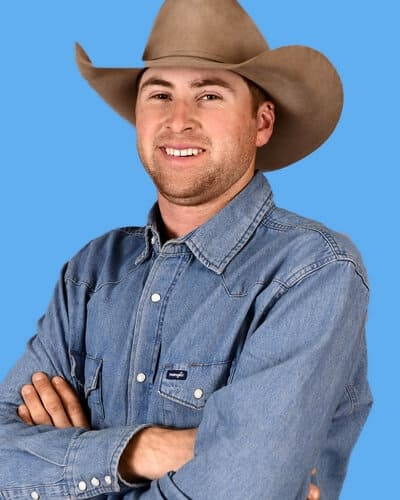
Seven years ago, when Cody Snow was still a teenager, he made an investment that has had a very positive influence in his life.
That was when he purchased a four-year-old mare, Ima Fresnos Dee, that has been partially responsible for his four trips to the Wrangler National Finals Rodeo. He calls the mare Annie and he is the only person that has ever roped on her.
Professional
2019 Highlights- Partner Wesley Thorp
• Won the Canby (Ore.) Rodeo
• Won the Coleman (Texas) PRCA Rodeo
• Won the Tri-State Rodeo Cinch Shoot-Out (Fort Madison, Iowa)
• Won the Springhill (La.) PRCA Rodeo
• Co-champion at the Oakley Independence Day Rodeo (Oakley City, Utah)
• Won the Buffalo (Texas) Stampede PRCA Rodeo
• Won the Clovis (Calif.) Rodeo, with Hunter Koch
Matt Sherwood: Matt Sherwood – Pima, Ariz. ($76,204) 6-time WNFR qualifier 2-time World Champion
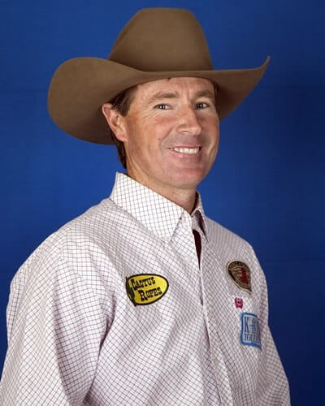
Matt Sherwood told Chelsea Schaeffer on the Team Roping Journal’s podcast “The Score” that this season had been a big rollercoaster ride.
Looking at his statistics, his career could be likened to a rollercoaster as well. Matt, from Pima, Arizona is headed to his sixth Wrangler National Finals Rodeo in 11th place with $76,204 won during the regular season.
Professional
2019 Highlights- Partner Hunter Koch
• Won the Strathmore (Alberta) Stampede
• Won the Innisfail (Alberta) Pro Rodeo
• Won the Brooks (Alberta) Kinsmen Pro Rodeo
• Won That Famous Preston (Idaho) Night Rodeo
• Won the Nicola Valley Pro Rodeo (Merritt, British Columbia)
• Co-champion at the Young Living’s Last Chance Rodeo (Mona, Utah)
• Won the Parada Del Sol (Scottsdale, Ariz.), with Derrick Begay
Kaleb Driggers: Kaleb Driggers – Hoboken, Ga. ($118,455) 8-time WNFR qualifier
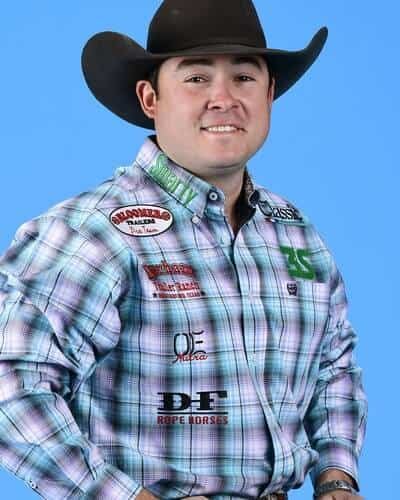
It would have been hard to imagine the career that was ahead of Kaleb Driggers when he first started roping as a four-year-old.
Twenty-five years later, Kaleb is headed to his eighth Wrangler National Finals Rodeo. He has won over $1.5 million in the PRCA alone, many major rodeo titles, and been the reserve world champion four times.
Three of those have been with his current partner, Junior Nogueira, and they have been the last three years. Kaleb enters the 2019 NFR in second place with $118,455.
Professional
2019 Highlights- Junior Nogueira
• Won the Dodge City (Kan.) Roundup Rodeo
• Won the Mineral Wells (Texas) PRCA Rodeo
• Won the Wolf Point (Mont.) Wild Horse Stampede
• Won the Cache County Fair And Rodeo (Logan, Utah)
• Won the Magic Valley Stampede (Filer, Idaho)
• Co-champion at the Pasadena (Texas) Livestock Show & Rodeo
• Co-champion at the Oakley Independence Day Rodeo (Oakley City, Utah)
Chad Masters: Chad Masters – Cedar Hill, Tenn. ($95,529) 13-time WNFR qualifier 2-time World Champion
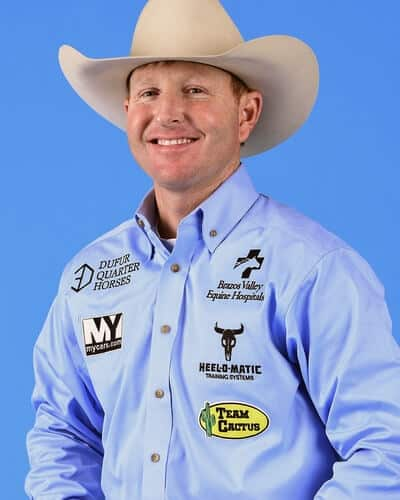
If Chad Masters is handing out advice to young people, he tells them to do something that he didn’t do, go to college and get an education.
The two-time world champion doesn’t have many regrets, but he has said that if he would have gone to college and gained maturity before starting on his journey to becoming one of the world’s best ropers, that journey might not have had so many twists and turns.
The Cedar Hill, Tennessee resident joined the PRCA in 2001 and two years later was heading at his first Wrangler National Finals Rodeo. In 2006 he won his first NFR average championship and finished the year as the reserve world champion.
Professional
2019 Highlights- Partner Joseph Harrison
• Won the Reno (Nev.) Rodeo
• Won the Walla Walla (Wash.) Frontier Days
• Won the Amarillo (Texas) Tri-State Fair and Rodeo
• Co-champion at the Lewiston (Idaho) Roundup
• Co-champion at the Gooding (Idaho) Pro Rodeo
Jake Cooper: Jake Cooper – Monument, N.M. ($73,191) 3-time WNFR Qualifier
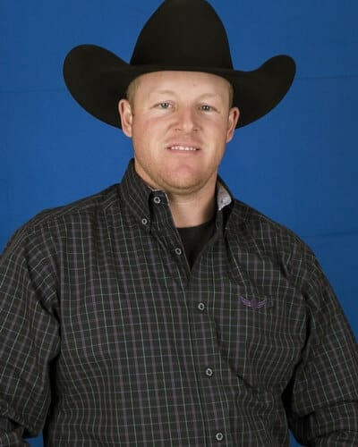
Fans are very excited to see the Cooper family represented in the team roping at the Wrangler National Finals Rodeo again. Jake Cooper, son of 1981 all around world champ and ProRodeo Hall of Fame inductee Jimmy Cooper qualified for this year’s NFR in the final spot.
He’ll rope there with Caleb Anderson who he has roped with all year. He qualified the first time in 2007 where he was heading for his twin brother Jim Ross Cooper. They made history as the only twins to compete in the team roping at the NFR.
Professional
2018 Highlights- Partner Logan Medlin
• Won That Famous Preston (Idaho) Night Rodeo
• Won the Douglas County Fair and Rodeo (Castle Rock, Colo.)
• Won the Lynden (Wash.) PRCA Rodeo
Tate Kirchenschlager: Tate Kirchenschlager – Yuma, Colo. ($75,738) First-time WNFR qualifier
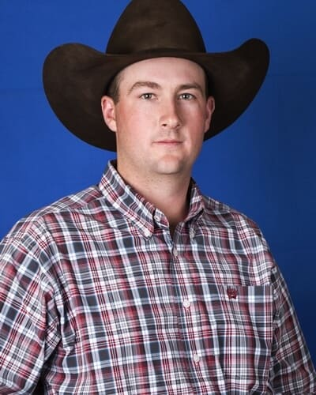
On Oct. 1st when the 2019 regular rodeo season was officially over, Tate Kirchenschlager posted on his Facebook wall, “What an unforgettable year it has been – I qualified for my first NFR.”
When Tate starts this year’s Wrangler National Finals Rodeo in 12th place with $75,738 in earnings. Throughout the year he has roped with five different partners, and two of them got him big wins that were critical to his qualification.
Last year he finished 47th in the world standings. That got him into San Antonio where he roped with the reigning team roping rookie, Ross Ashford for the first time. They got the W there and collected $25,750. Just like that, the eight-year-member of the PRCA was at the top of the world standings.
Professional
2019 Highlights
• Won the San Antonio (Texas) Stock Show & Rodeo, with Ross Ashford
• Won the Ellensburg (Wash.) Rodeo, with Buddy Hawkins II
• Won the Woodward (Okla.) Elks Rodeo, with Buddy Hawkins II
• Won the Stockyards Championship (Fort Worth, Texas), with Buddy Hawkins II
• Won the Kit Carson County Pro Rodeo (Burlington, Colo.), with Buddy Hawkins II
Luke Brown: Luke Brown – Rock Hill, S.C. ($84,939) 12-time WNFR qualifier
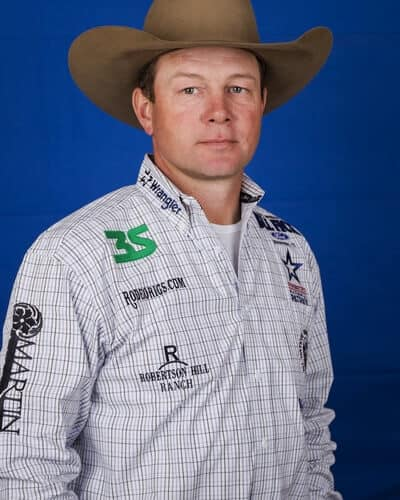
Luke Brown is making some room on the trophy wall of his barn. When he walks in there, he has a nice reminder of the success that he has had as a PRCA team roping header.
He has qualified for his 12th consecutive Wrangler National Finals Rodeo in 10th place with $84,939 earned during the regular season. His previous 11 back numbers are all framed and hung on the wall. And while he lives in Texas now, South Carolina will always be home. He’ll be proud to carry the “Palmetto State” flag during the grand entry for 10 nights in Vegas.
Professional
2019 Highlights
• Won the Oakdale (Calif.) Saddle Club Rodeo, with Jade Corkill
• Won the Wild Bill Hickok Rodeo (Abilene, Kan.), with Paul Eaves
• Won the West Texas (Abilene) Fair & Rodeo, with Paul Eaves
Tyler Wade: Tyler Wade – Terrell, Texas ($73,394) 3-time WNFR qualifier
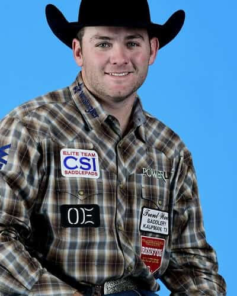
With three Wrangler National Finals Rodeo qualifications to his credit, it’s going to be a smarter Tyler Wade that rides into the roping box in the Thomas and Mack Center this year.
Tyler learned a lot at his first two qualifications. The first was in 2016 with Dakota Kirchenschlager. He missed it in 2017 finishing the season in 28th. Then he made it back again in 2018.
The first year he was there he didn’t really know what to expect and no matter what anyone told him, experiencing it for himself was a different reality. He saw what other ropers did to prepare and tried to mimic that. It wasn’t the best plan. He and Dakota placed in four rounds.
Professional
2019 Highlights- Partner Billie Jack Saebens
• Won the 101 Wild West Rodeo (Ponca City, Okla.)
• Won the Cowboy Country Fest (Shawnee, Okla.)
• Won the Rooftop Rodeo (Estes Park, Colo.)
• Co-champion at the Gooding (Idaho) Pro Rodeo
• Co-champion at the Lawton (Okla.) Rangers Rodeo
• Co-champion at the Mesquite (Texas) Championship Rodeo, June 8
Coleman Proctor: Coleman Proctor – Pryor, Okla. ($104,318) 5-time WNFR qualifier
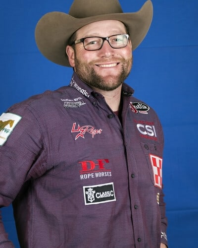
Coleman Proctor knows what it is like to be on the bubble for the Wrangler National Finals Rodeo. He knows all about near misses as well after finishing last year in 18th place.
Now he knows what it is like to qualify for rodeo’s championships near the top of the list and to be able to pick and choose which fall rodeos he wants to compete at. That happened this year thanks in part to a big win he and partner Ryan Motes had at RFD-TV’s The American last March.
That $50,000 that he won there had him in second place in the world standings the first of April with over $90,000 in earnings. That is a position he had never been in before. He continued picking up checks with Ryan and other partners to the tune of $104,318 earned in the regular season.
Professional
2019 Highlights- Partner Ryan Motes
• Won The American (Arlington, Texas)
• Won the Lea County PRCA Rodeo (Lovington, N.M.)
• Won the Tri-State Rodeo Cinch Shoot-Out (Fort Madison, Iowa)
• Co-champion at the Lawton (Okla.) Rangers Rodeo
• Won the Inter-State Rodeo (Coffeyville, Kan.), with Brye Crites
• Co-champion at the Eureka (Kan.) Pro Rodeo, with Brye Crites
• Won Tulsa (Okla.) State Fair PRCA Rodeo, with Joseph Harrison
How does a breakaway rope work?
The rope is tied to the saddle horn with a string. When the calf hits the end of the rope, the rope is pulled tight and the string breaks. The breaking of the string marks the end of the run. The rope usually has a small white flag at the end that makes the moment the rope breaks more easily seen by the timer. In conjunction with the Wrangler® National Finals Rodeo (NFR) at Globe Life Field in Arlington, Texas, women ropers will compete for the 2020 world championship: The Wrangler® NFBR and a $200,000 purse at this three-day event.